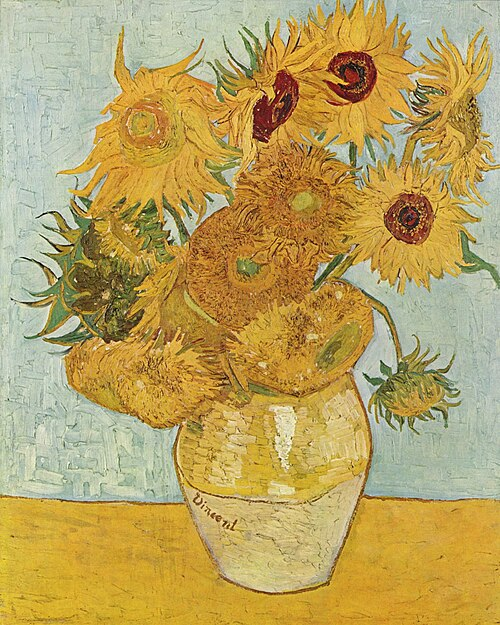
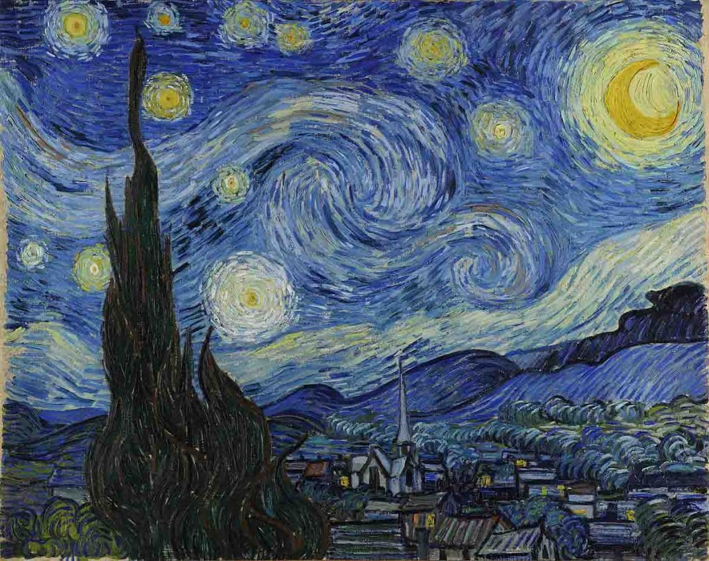
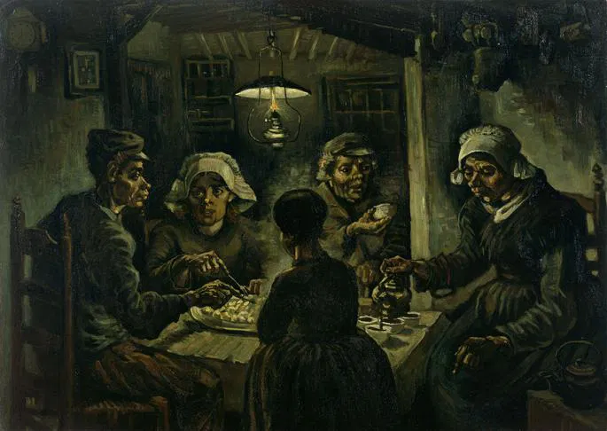

O homem que decifrou o amarelo
.jpg)
Vincent van Gogh foi um pintor pós-impressionista neerlandês. Considerado uma das figuras mais famosas e influentes da história da arte ocidental, criou mais de dois mil trabalhos ao longo de pouco mais de uma década, incluindo 860 pinturas a óleo, grande parte das quais, concluídas nos seus últimos dois anos de vida. As suas obras incluem paisagens, natureza-morta, retratos e autorretratos, caracterizados por cores dramáticas e vibrantes, além de pinceladas impulsivas e expressivas, que contribuíram para as fundações da arte moderna e trouxeram distinção para o estilo do pintor.
Á medida que produzia suas obras, criou uma nova abordagem às naturezas-mortas e às paisagens, com suas pinturas a assumir cores mais vivas enquanto desenvolvia um estilo que se estabeleceu por completo em 1888, durante a sua estadia em Arles. Durante esse período, o pintor também ampliou seus temas que passaram a incluir oliveiras, ciprestes, campos de trigo e girassóis.
Obras mais Famosas


